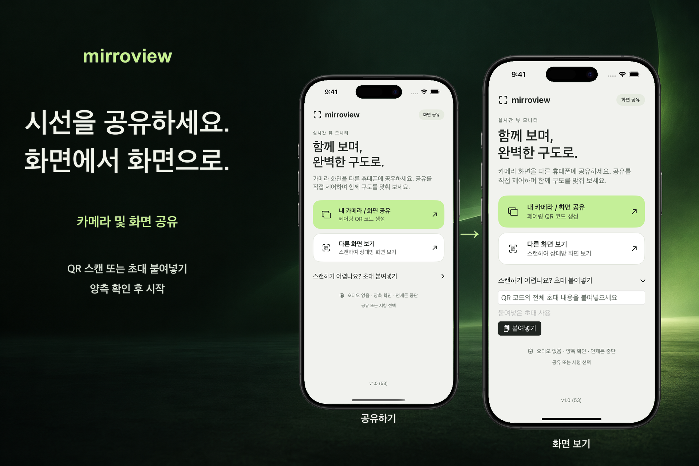

대면 연결
한 사람이 초대를 공유하면 다른 사람이 QR 코드를 스캔하거나 초대를 붙여넣은 뒤, 양측이 세션을 확인합니다.
선택으로 시작하는 화면 공유
가까이 있는 사람과 iPhone 또는 iPad 화면을 공유하세요. 두 기기 모두 iOS 또는 iPadOS 17 이상이 필요합니다. 양측이 세션을 확인하고, 보내는 사람이 시스템 화면에서 화면 기록을 승인하면 공유가 시작됩니다.

한 사람이 초대를 공유하면 다른 사람이 QR 코드를 스캔하거나 초대를 붙여넣은 뒤, 양측이 세션을 확인합니다.
홈 화면에서 전체 화면 공유를 시작합니다. iOS 또는 iPadOS 승인 후, 보내는 사람은 카메라를 포함한 다른 앱을 열어 그 화면을 보여줄 수 있습니다.
어느 기기에서든 세션을 종료할 수 있습니다. 첫 연결 시에는 서로 통신 가능한 동일한 로컬 Wi-Fi 네트워크를 사용하세요. 근거리 연결 가능 여부는 기기, 시스템 지원 및 무선 환경에 따라 달라집니다.
화면 공유 중에는 알림이나 기타 개인정보가 노출될 수 있습니다. 앱은 오디오를 전송하지 않습니다. 보는 사람이 화면을 캡처하거나 화면 기록, 또는 외부 기기로 촬영할 수 있습니다. 일부 보호된 콘텐츠는 빈 화면으로 표시될 수 있습니다.